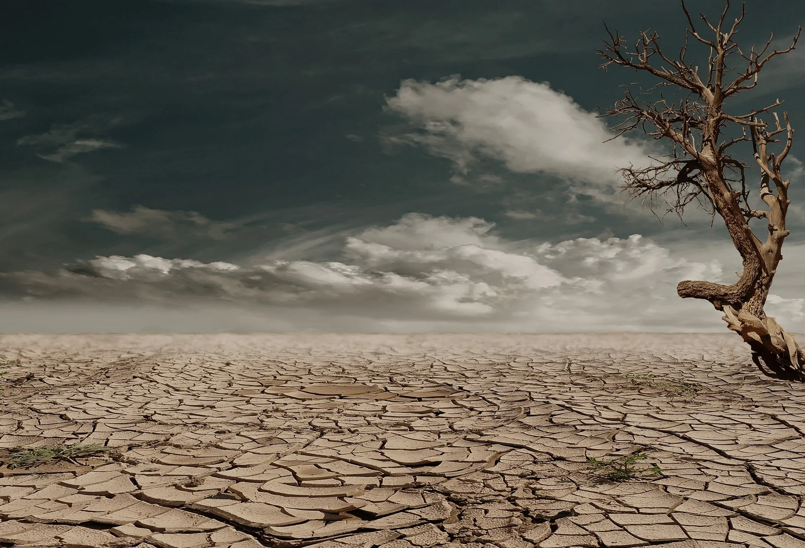

Ayaklarımızın altında, çoğu zaman fark etmediğimiz canlı bir fabrika çalışıyor. Dünyada tükettiğimiz gıdanın yaklaşık yüzde 95'i doğrudan topraktan geliyor, ama tarıma elverişli yalnızca 50 santimetrelik bir toprak tabakasının oluşması ortalama 20 bin yıl sürüyor; FAO'nun hesaplarına göre ise sadece 2-3 santimetrelik bir toprağın oluşması bile 1000 yıla kadar zaman alabiliyor. Buna karşın bu kırılgan kaynağın üçte biri şimdiden orta ila yüksek düzeyde bozulmuş durumda. Bu yazı toprağın nasıl doğduğunu, hangi katmanlardan oluştuğunu, verimliliğini neyin belirlediğini ve bugün gerçekten ne kadar tehlikede olduğunu güncel bilimsel kaynaklarla ele alıyor.
Toprak Neden Bu Kadar Kritik?
Toprak, tarımsal üretimin en temel kaynağı; bitkilerin ihtiyaç duyduğu besin elementlerini, suyu ve yaşam ortamını sağlıyor. FAO'nun verilerine göre dünya genelinde tüketilen gıdanın yüzde 95'i doğrudan ya da dolaylı olarak topraktan üretiliyor. Okyanuslardan sonra en büyük ikinci karbon deposu da yine toprak; bu nedenle iklim krizini yavaşlatma potansiyeli açısından da kritik bir rol üstleniyor. FAO'nun Küresel Toprak Organik Karbon haritasına göre topraklar yılda 2,05 petagram CO2 eşdeğerine kadar karbon tutabilir; bu da tarımsal alanlardan kaynaklanan sera gazı emisyonlarının yüzde 34'ünü dengeleyebilecek bir potansiyel anlamına geliyor.
Ancak toprağın bu kritik önemi, onu yenilenemez bir kaynak gibi ele almamızı gerektiriyor. Tüm organizmaların yaklaşık dörtte biri ile üçte biri arasındaki bir kısmı toprağın içinde yaşıyor — bu da toprağı gezegendeki en yoğun biyoçeşitlilik noktalarından biri hâline getiriyor. Yine de dünya topraklarının önemli bir kısmı erozyon, organik madde kaybı, tuzlanma, kirlilik ve sıkışma gibi tehditler altında hızla niteliğini kaybediyor.
Pedogenez: Toprak Nasıl Doğar?
Toprağın oluşum sürecine bilim dilinde pedogenez deniyor — Yunancada "pedo/pedon" (toprak) ve "genesis" (köken, doğuş) kelimelerinden geliyor. Pedolojinin babası kabul edilen Rus jeolog Vasili Dokuçayev, 1883'te toprağın iklim, bitki örtüsü, topografya ve ana materyalin etkisiyle zaman içinde oluştuğunu tespit etti. 1941'de Amerikalı toprak bilimci Hans Jenny bu modeli geliştirerek toprak oluşumunu beş temel faktöre bağladı — literatürde "CLORPT" kısaltmasıyla anılan bu model hâlâ toprak biliminin temelini oluşturuyor.
🌿 Toprak Oluşumunun Beş Temel Faktörü (CLORPT)
- İklim: Sıcaklık ve yağış, ana kayanın fiziksel ve kimyasal ayrışma hızını belirler; nemli bölgelerde kimyasal çözünme hızlı, soğuk/kurak bölgelerde fiziksel çözülme yavaştır
- Ana materyal: Toprağın altındaki ana kayanın mineral bileşimi, toprağın mineralojik içeriğini ve ayrışma hızını doğrudan etkiler
- Canlılar (organizmalar): Mikroorganizmalar, solucanlar, kökler ve bitki örtüsü toprağın havalanmasını, ayrışmasını ve humus oluşumunu sağlar
- Topografya (yer şekilleri): Eğim, yükselti ve bakı; güneşlenme süresini, su akışını, erozyonu ve organik madde birikimini belirler
- Zaman: Ana kayanın ufalanması, canlıların yerleşmesi ve humus oluşumu belirli bir süreye bağlıdır; bu faktörlerden biri eksik olsa dahi toprak oluşumu tamamlanamaz
Toprak oluşumu tek bir anda gerçekleşen bir olay değil; başlangıç, ayrışma, dönüşme, farklılaşma (morfojenez) ve horizonlaşma olarak tanımlanan art arda gelen evrelerden oluşuyor. Bu evrelerin sonunda ortaya "toprak profili" adı verilen, yüzeyden ana kayaya kadar uzanan katmanlı bir yapı çıkıyor.
Toprak Profili: Yüzeyin Altındaki Katmanlar
Bir toprağı dikey kesitiyle incelediğinizde, her biri farklı renk, doku ve kimyasal özelliklere sahip katmanlar —horizonlar— görürsünüz. En üstteki organik tabakadan (O horizonu) başlayıp ana kayaya (R horizonu) kadar uzanan bu katmanlar, toprağın yaşını ve verimlilik potansiyelini de ele veriyor.
📑 Toprak Horizonları — Yüzeyden Ana Kayaya
| Horizon | Tanım |
|---|---|
| O Horizonu | Yaprak döküntüsü ve organik artıkların ayrışmakta olduğu en üst tabaka |
| A Horizonu | Humusça zengin, koyu renkli üst toprak; kök gelişiminin ve tarımsal verimliliğin belirlendiği tabaka |
| B Horizonu | Üstten yıkanan kil, demir ve mineral bileşiklerin biriktiği alt toprak katmanı |
| C Horizonu | Kısmen ayrışmış ana materyal; kum, silt ve kil gibi ayrışma ürünlerinin oluştuğu katman |
| R Horizonu | Henüz ayrışmamış ana kaya (bedrock) |
Toprak biliminde A ve B horizonlarının birleşimine "solum" deniyor — asıl toprağın verimliliğini belirleyen kısım burası. Toprak ne kadar olgunsa horizonlaşma o kadar belirgin oluyor; genç topraklarda bu katmanlar henüz net biçimde ayrışmamış oluyor.
Verimliliği Belirleyen Unsurlar: Fiziksel, Kimyasal, Biyolojik
Toprağın verimliliğini tek bir özelliğe bakarak değerlendirmek mümkün değil; fiziksel, kimyasal ve biyolojik birçok parametrenin bir arada incelenmesi gerekiyor. Fiziksel tarafta belirleyici olan, kil, silt, kum ve organik madde parçacıklarının zamanla birbirine bağlanarak oluşturduğu agregatlar — küçük toprak tanecik toplulukları. Bu yapı toprağı gevşek ve süngerimsi hâle getiriyor; kökler agregatlar arasındaki boşluklardan kolayca ilerleyip toprağa tutunabiliyor, oksijen ve karbondioksit gibi gazlar da rahatça dolaşabiliyor. Agregatlaşma zayıfsa toprak ya beton gibi sıkılaşıp kök gelişimini zorlaştırıyor ya da aşırı gevşeyip su tutamıyor.
Kimyasal tarafta toprağın pH değeri, kireç ve tuz oranı, organik madde miktarı ve besin elementi (azot, fosfor, potasyum, mikro elementler) içeriği belirleyici. Biyolojik tarafta ise toprağın canlılığı devreye giriyor: aktif biyolojik topluluklar azotu mineralize ediyor, toprak yapısını oluşturuyor ve bitki patojenleriyle rekabet ederek bitkileri koruyor. Bu üç boyut birbirinden bağımsız değil — örneğin aşırı ıslak toprak üzerinde ağır ekipman kullanmak fiziksel sıkışmaya yol açıyor, bu da hem havalanmayı hem de biyolojik aktiviteyi baskılıyor.
Toprağın Altındaki Yaşam: Görünmeyen Biyoçeşitlilik
Toprağı cansız bir madde yığını olarak düşünmek büyük bir yanılgı. Tahminlere göre bir kübik ayak (yaklaşık 28 litre) toprakta 2 trilyon bakteri, 5 kilometrelik mantar hifi ağı ve 4 milyon protozoa bulunabiliyor. Avrupa Çevre Ajansı'na göre yalnızca bir metreküp orman toprağı 2.000 omurgasız türünü barındırabiliyor — bu, aynı bölgenin yer üstündeki biyoçeşitliliğinden bile daha zengin bir tablo demek. Almanya'da bilinen toprak solucanı türü sayısının 50'yi bulması, toprak altı yaşamın tür zenginliğine dair çarpıcı bir örnek.
Bu mikroskobik dünyanın işlevleri hayati: toprak mikroorganizmaları organik atıkları ve toksik kimyasalları ayrıştırıp zararsız hâle getiriyor, suyu arıtıyor, erozyonu önlüyor ve verimliliği yeniden sağlıyor. Kullanılan antibiyotiklerin önemli bir kısmının kaynağı da yine topraktaki mikroorganizmalar. İlginç bir ayrıntı: atmosferin yaklaşık yüzde 80'i azottan oluşmasına rağmen, bu gazı doğrudan kullanabilen çok az sayıda canlı var — ve bunların büyük kısmı da yine toprakta yaşayan bakteriler. Solucanlar ise bitki kalıntılarını ve organik maddeyi sindirerek ürettikleri gübreyle toprağın besin döngüsüne doğrudan katkı sağlıyor; dünya genelinde Antarktika dahil hemen her toprakta bulunuyorlar.
Küresel Tabloda Toprak: Erozyon ve Bozulma
Toprağın oluşumu binlerce yıl sürerken, kaybı çok daha hızlı gerçekleşiyor. FAO'nun 2015 tarihli Dünya Toprak Kaynakları Durumu Raporu'na göre dünya topraklarının yüzde 33'ü şimdiden orta ila yüksek düzeyde bozulmuş durumda ve bu oranın 2050'ye kadar yüzde 90'ı aşabileceği öngörülüyor. Kasım 2025'te yayımlanan güncel bir FAO raporu ise insan kaynaklı arazi bozulmasının etkilerini somutlaştırıyor: dünya genelinde 1,7 milyar insan, mahsul veriminin yüzde 10 daha düşük olduğu bölgelerde yaşıyor; bunların 47 milyonu ise 5 yaş altı, büyüme geriliği yaşayan çocuklar.
🌍 Küresel Toprak Erozyonu — Temel Rakamlar (FAO)
| Gösterge | Değer |
|---|---|
| 2-3 cm toprağın oluşma süresi | ~1.000 yıl |
| Şimdiden bozulmuş toprak oranı | %33 |
| 2050'ye kadar bozulma riski taşıyan oran | %90'a kadar |
| Her 5 saniyede kaybolan toprak alanı | 1 futbol sahası büyüklüğünde |
| Arazi bozulmasından etkilenen insan sayısı | 1,7 milyar |
| Bozulmadan atmosfere salınan karbon | ~78 gigaton |
Sorunun büyük kısmı insan kaynaklı: tarım arazisi artışı ve ormansızlaşma gibi arazi kullanım değişiklikleri, 2001-2012 döneminde su erozyonunda yüzde 2,5'lik bir artışa yol açtı. İşlenen tarım arazilerinde ya da aşırı otlatılan alanlarda toprak erozyonu, doğal erozyon hızının 100 ila 1000 katına kadar çıkabiliyor. Tuzlanma da ayrı bir tehdit: dünya genelinde 160 milyon hektar tarım arazisini etkiliyor ve her yıl 1,5 milyon hektar araziyi kullanılamaz hâle getiriyor.
Türkiye'de Toprak: Çölleşme Riski ve Erozyon
Türkiye, coğrafi konumu, iklimi, topografyası ve toprak koşulları nedeniyle çölleşmeye, arazi tahribatına, erozyona ve kuraklığa karşı son derece hassas bir ülke. Ondokuz Mayıs Üniversitesi Ziraat Fakültesi'nden Prof. Dr. Yusuf Demir'e göre Türkiye'deki arazilerin yüzde 47'si erozyon nedeniyle çölleşme riski altında ve ülke genelinde yıllık ortalama 640 milyon ton toprak kayboluyor. Aynı değerlendirmeye göre tarım yapılabilir 50 santimetrelik bir toprağın oluşma süreci yaklaşık 20 bin yılı buluyor.
TEMA Vakfı'nın verilerine göre Türkiye'de denize ulaşan sediment (aşınmış toprak) miktarı yılda 814,6 milyon m³'e ulaşıyor; bu da ülkenin ortalama yılda 1 milimetre, on yılda ise 1 santimetre toprak kaybettiği anlamına geliyor — 1 santimetrelik toprağın yeniden oluşması ise 300-400 yıl sürüyor. Türkiye topraklarının yüzde 90'ı su erozyonuna, yüzde 1'i ise rüzgâr erozyonuna maruz kalıyor; ülkenin engebeli topografyası nedeniyle eğimin yüzde 15'in üzerinde olduğu alanlarda orta ve şiddetli erozyon görülen bölgeler toplam arazinin yüzde 65'ini oluşturuyor. Tarım, orman ve mera alanlarını kapsayan yaklaşık 57 milyon hektarlık alanda aktif erozyon görülüyor.
Çölleşme ve Erozyonla Mücadele Genel Müdürlüğü'nün hazırladığı Türkiye Çölleşme Hassasiyet Haritası'na göre Konya-Karapınar, Iğdır-Aralık ve Şanlıurfa-Ceylanpınar en yüksek çölleşme hassasiyeti gösteren bölgeler arasında yer alırken, yağışın ve nemin bol olduğu Karadeniz Bölgesi en düşük hassasiyet sınıfında bulunuyor. Bu haritalama çalışması iklim, su, toprak, arazi örtüsü, arazi kullanımı, topografya, jeomorfoloji, sosyo-ekonomi ve yönetim olmak üzere 7 temel kriter ve 48 göstergeyi bir arada değerlendiriyor.
Sürdürülebilir Toprak Yönetimi: Ne Yapılabilir?
Bilim insanlarının üzerinde hemfikir olduğu temel nokta net: toprağın verimliliğinin sürmesi için ölü örtü oluşumunun kesilmemesi ve erozyonla kaybın en aza indirilmesi, mümkünse tamamen önlenmesi gerekiyor. Bu çerçevede üç düzeyde önlem öne çıkıyor:
Arazi düzeyinde: Eğimli arazilerde teraslama, ağaçlandırma ve rüzgar kıranları kurmak gibi ıslah çalışmaları; bitki örtüsünün korunması, çünkü bitki kökleri hem toprağı erozyona karşı tutuyor hem de organik madde vererek humus oluşumunu destekliyor.
Tarımsal yönetim düzeyinde: Toprak analizine dayalı gübreleme, gerektiğinde drenaj sistemleri, agregat yapısını koruyacak işleme teknikleri ve toprağı çıplak bırakmayan ekim nöbeti uygulamaları.
İzleme ve politika düzeyinde: Yüksek çözünürlüklü uydu görüntüleri ve coğrafi bilgi sistemleriyle güncel toprak veritabanlarının oluşturulması; Türkiye'de yürütülen Dinamik Erozyon Modeli ve İzleme Sistemi (DEMİS) gibi çalışmalar, potansiyel ve gerçek toprak kayıplarının su havzaları bazında haritalanmasını sağlıyor.
📚 Bu Yazıda Başvurulan Kaynaklar
- FAO (Kasım 2025). FAO report: 1.7 billion people experience lower crop yields due to land degradation. fao.org
- FAO Global Symposium on Soil Erosion. Key messages. fao.org
- FAO Global Soil Partnership. Healthy soils for a healthy people and planet. fao.org
- UN News (Kasım/Aralık 2025). FAO warns of 'silent crisis' as land degradation threatens billions. news.un.org
- Annual Reviews (2024). Status of the World's Soils. annualreviews.org
- Ondokuz Mayıs Üniversitesi (2025). Türkiye'de Arazilerin Yüzde 47'si Erozyon Nedeniyle Çölleşme Riski Altında. omu.edu.tr
- TEMA Vakfı. Toprağımız Akıp Gitmesin. tema.org.tr
- TEMA Toprak. Toprak Nasıl Oluşur? ve Toprak Canlı Çeşitliliği. topraktema.org
- Çölleşme ve Erozyonla Mücadele Genel Müdürlüğü, T.C. Tarım ve Orman Bakanlığı. Türkiye Çölleşme Modeli ve Hassasiyet Haritası. cem.csb.gov.tr
- Çölleşme ve Erozyonla Mücadele Genel Müdürlüğü. Toprak Erozyonu Kontrol Stratejileri.
- Vikipedi. Toprak oluşumu (Pedogenez).
- Avrupa Çevre Ajansı. Toprak: ayaklarımızın altında yaşayan hazine. eea.europa.eu
- Haliç Çevre Laboratuvarı. Toprak Verimliliği. haliccevre.com
- Demirel Kardeşler Fidancılık. Toprak Sağlığı Göstergeleri.
Sonuç: Görünmeyen ama Vazgeçilmez
Toprak, oluşumu binlerce yıl süren ama kaybı bir insan ömründen çok daha kısa zamanda gerçekleşebilen, kendini yenileyemeyecek kadar yavaş bir kaynak. Beş faktörün — iklim, ana materyal, canlılar, topografya ve zamanın — uyum içinde çalışmasıyla ortaya çıkan bu ince katman, gezegendeki gıda üretiminin, karbon döngüsünün ve biyoçeşitliliğin büyük kısmını sırtlıyor. Türkiye'de yılda 640 milyon ton toprağın kaybolması ya da dünya genelinde her beş saniyede bir futbol sahası kadar toprağın erozyonla yok olması, aslında çok uzak bir gelecek senaryosu değil; şu anda, gerçek zamanlı olarak devam eden bir süreç. Toprağı korumanın yolu, onu yeniden üretilebilir sanmaktan vazgeçip, gerçekte olduğu gibi — yenilenmesi imkânsıza yakın, kıymetli bir kaynak olarak — ele almaktan geçiyor.